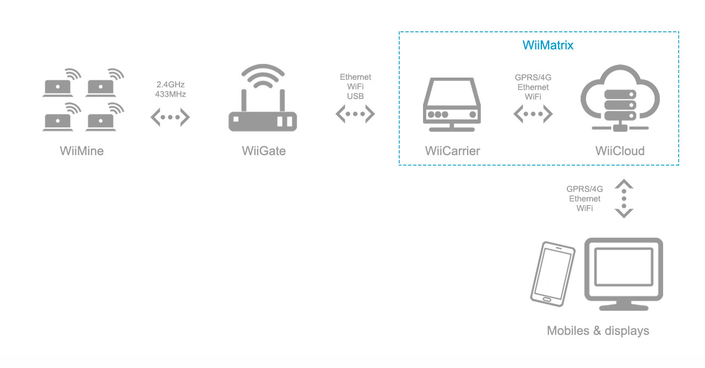
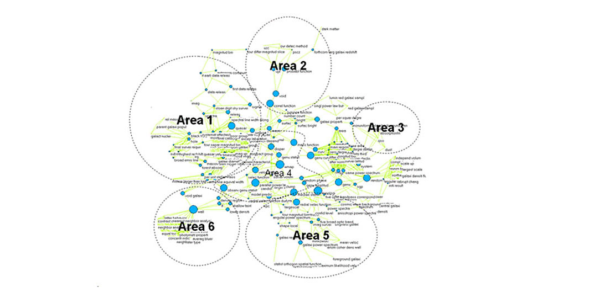
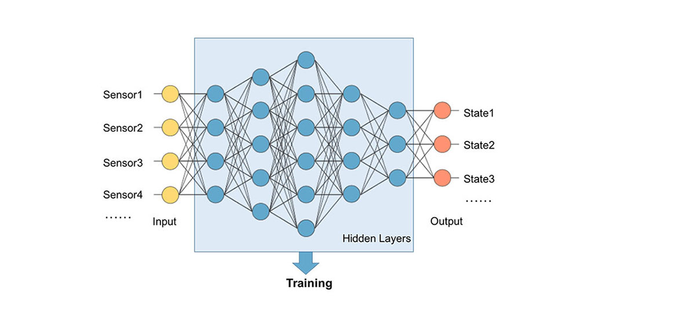

WiiMatrix 算法与分析
“所谓大数据，不光是大量数据，还是各个维度的‘全面数据’，这就是WiiMatrix！” —— Andrew, CEO
WiiMatrix是一个大数据的算法与分析系统，它是纯软件，支持分布式计算，运行在WiiCarrier和WiiCloud之上。
应用领域
- 大数据分析；
- 数据趋势监测与预警；
- 复杂数据的模式识别；
优势与特性
- 分布式、高维度计算；
- 基于神经网络的机器学习；
- 支持多种神经网络模型；
- 支持时域、频域分析；
网络拓扑
分布式计算
WiiMatrix让分布于各地的WiiCarrier（现场服务器）和WiiCloud（云端服务器）协同工作。
通常情况下，数据会先经WiiCarrier进行初步处理，后将处理的“结果”交付WiiCloud。由于数据量巨大，这样既可以减轻WiiCloud的计算负担，也可以节省因流量和带宽带来的高昂费用。

机器学习
一个传感器所采集的变量是监测对象在某一个维度上的数据，成百上千个传感器构建起高维度的数据。维度越高，就越接近对象的真实状态。对这么大量的高维数据进行人工分析是不合适的，应利用机器学习进行模式识别。
基于神经网络构建机器学习模型，左侧为传感器的数据输入，右侧为监测对象的状态判断（如正常、异常等状态），中间为分类和学习算法。
时域分析
WiiMatrix跟踪各个维度上信号的变化趋势，以判断是否发生异常，并触发不同等级的报警信号。
通过机器学习算法，WiiMatrix从历史数据中动态调整报警阈值，使报警更符合现场的真实状况。

变换域分析
WiiMatrix提供了多种变换域上的分析工具，如FFT、小波变换、瀑布图等。
| 参数 | 内容 |
|---|---|
| 机器学习框架 | TensorFlow |
| 分布式计算 | 支持 |
| 训练期 | 需要 |
| 频域变化 | FFT、小波变换 |
| 阈值设定 | 自适应 |
| 消息推送 | 微信、邮件、短信 |
（略）